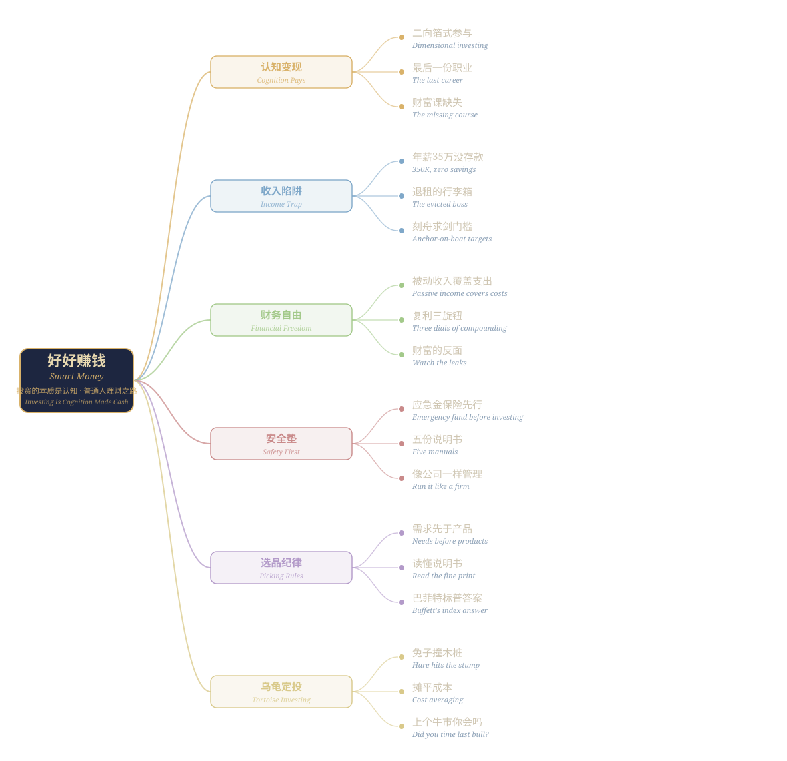

好好赚钱
〇 · 书籍信息
基本信息
| 书名 | 《好好赚钱》——2013 年起做理财科普的简七写给普通人的书：「没有一夜暴富的诱惑，没有读起来顺口的『鸡汤』」——想把这个纷繁复杂的金融世界，读成一本情节简单、结局明了的言情小说 |
|---|---|
| 作者 | 简七：西南财经大学毕业、四大会计师事务所出身——工作里天天和钱打交道，却发现自己也没思考过「自己怎么理财」：这本书从作者自己的焦虑写起 |
| 结构 | 两部分：思维升级（投资的本质是认知 / 关注财富的反面 / 第一桶金）+ 上手实践（检查财务状况 / 建立安全保障 / 理财产品 / 指数基金 / 极简投资法 / 五份说明书）——11 章从「想明白」走到「做得出来」 |
| 方法 | 「第一原理思维」：「一层层剥开事物的表象，看到本质，看到不变的东西，然后再从本质一层层往外走」——拒绝「比较思维」：别人做的事我们就去做，是理财焦虑的来源 |
| 一句话 | 投资的本质是认知的财务变现：财务自由 = 被动收入覆盖日常支出——好好赚钱不是财务课，是把「钱与你的关系」理顺的思维课。 |
一 · 核心主题总览
一本理财书里的四组母题：① 认知的财务变现
「本质上，投资其实是我们整体认知的财务变现，能够把我们对于政治、宏观经济、中观行业、微观商业、人性，甚至是对于自己的认识投射于损益这一维度上」——作者借《三体》的「二向箔」类比：抓住多个行业的大机遇很难，但投资可以「轻而易举地参与各行各业」——降维攻击式的财富逻辑，让投资成为「人生最后一份职业」。
② 收入不等于财富
读者迪娜的来信是全书的第一面镜子：年薪 35 万，吃 100 元的沙拉、人均 800 的聚餐、四位数五位的包包——直到看见年薪百万的领导「拖着几大箱行李来办公室，被房东临时退租」——「很多职场『白骨精』年收入以百万计，却依然生活得焦虑而慌张」：一旦工作有变化，收入戛然而止。财务自由被重新定义：「实现财务自由的一个最基本的标准，就是我们的被动收入刚好可以覆盖日常生活的支出费用」。
③ 复利与第一桶金
「被爱因斯坦称为世界第八大奇迹的复利公式」被写成三要素清单：复利 = 本金 ×（1 + 利率）^ 计息期——本金、利率、时间，三个旋钮各有各的拧法；而第一桶金的来源不是运气，是「关注财富的反面」——先堵住流失的口子，再谈增长的坡道。
④ 乌龟式投资
第 10 章把普通人投资的最优解写成寓言：「一次性投资好像兔子，遇上好时候，也许可以冲得很快，但是一旦遇到市场波动，可能会撞上木桩」——「定投好像乌龟……长期来看，它是分批慢慢把钱投入，稳扎稳打，投资成本也会被摊平，最终取得胜利」；配套数据扎心：「过去 10 年 80% 以上的基金都是赚钱的，但绝大多数基金投资者却是亏损的」——亏在情绪，不亏在基金。
二 · 第一段 思维升级 —— 认知与财富课—— 二向箔 · A面B面 ——
投资是人生最后一份职业
对这句流传甚广的话，作者给出正经解释：不是「不用上班躺着赚钱」，而是投资的门槛是认知——「当我们沉淀了越来越多的智慧和更加成熟的三观后，投资成为我们最后一份职业的好选择」。财富课的缺席被讲成 A 面 B 面的切换：上学时家长老师是 A 面——「生怕我们早恋」；一毕业立刻翻到 B 面——「恨不得一键生成完美对象」；金钱同样如此：象牙塔里谈钱是不务正业，毕业后车子房子躲都躲不开——「财富课的缺失，让我们很难正确理解好好赚钱这件事」。
◆ 语言学习 · 概念 · 认知变现
| 认知变现 | 投资 = 政治 + 宏观 + 行业 + 商业 + 人性的认知投射到损益 |
|---|---|
| 二向箔 | 《三体》类比：投资对全行业的降维参与 |
| 最后一份职业 | 投资需要人生阅历打底——它排最后的真正原因 |
| A面B面 | 财富课的缺失机制：上学禁谈钱、毕业逼谈钱 |
句型 ｜ 「认知，几乎是人与人之间唯一的本质差别。」——引傅盛的话立论：技能差别可量化（熟练工种），认知差别不可量化（本质差别）——理财书的全部内容，都是在给认知打地基。
年薪 35 万为什么没存下钱
迪娜的故事被完整保留：名校毕业进事务所，为了融入高端写字楼「开始学习用『贵』的东西来堆砌和打扮自己」——直到领导的退租行李箱揭示真相。作者的诊断分成两层：其一，消费随环境升级而非随价值升级——「用贵的东西堆砌自己」是把身份外包给消费；其二，收入结构单薄——「一旦发生意外或者工作有变化，收入就会戛然而止或严重缩水」。对照胡润的财务自由门槛（一线城市 2.9 亿元），作者的判词是「刻舟求剑式的数字」——自由的刻度不在别人那里，在自己「被动收入 ÷ 日常支出」的比值里。
◆ 语言学习 · 概念 · 财务自由
| 迪娜的账单 | 高收入高消费循环——存不下钱的教科书样本 |
|---|---|
| 退租的行李箱 | 百万年薪领导的窘境：收入≠安全垫 |
| 被动收入 | 「出额外劳动就能赚取的钱」——自由的基本单位 |
| 刻舟求剑式数字 | 胡润 2.9 亿门槛——别人的刻度量不了你的船 |
习语 ｜ 「实现财务自由的一个最基本的标准，就是我们的被动收入刚好可以覆盖日常生活的支出费用。」——全书对「自由」的定义式：自由不问身价，只问比值——分子靠投资，分母靠清醒。
三 · 第二段 复利与安全垫 —— 第一桶金的来历—— 第八大奇迹 · 应急的钱 ——
复利三旋钮
「回归财富增长的本质」被写成一张公式卡：复利 = 本金 ×（1 + 利率）^ 计息期——「如果想要享受复利，可以从三个要素上下功夫：本金、利率和计息期」；作者甚至给出动手作业：用 Excel 的 FV 函数「自己验证一下，用 FV 这个标准公式来感受复利的威力」。本金的起点被命名为「第一桶金」，而它的来源在第 2 章：「关注财富的反面」——先记录、先止损、先区分「想要」与「需要」：增长的坡道再长，也长不过漏水的速度。
◆ 语言学习 · 概念 · 复利
| 复利公式 | 本金 ×（1+利率）^ 期数——三个可拧的旋钮 |
|---|---|
| FV 函数 | Excel 里亲手算一遍：复利要用手感确认 |
| 第一桶金 | 投资的入场券：来自记录与止损，不来自运气 |
| 财富的反面 | 第 2 章标题：先堵漏，再加速 |
句型 ｜ 「让你这个月存 1000 元，并不难。如果你能够每个月都有这样的储蓄习惯，坚持几年，甚至十几年，就已经打败 80% 以上的人了。」——储蓄的反直觉真相：难的不是单笔，是重复——理财的分水岭在「坚持几年」这道无人监考的坎上。
安全保障与说明书
实践部分从防守开始：第 5 章「建立安全保障」——应急金、保险、保障顺序排在投资之前；第 11 章「用五份说明书轻松管理财务」——把家庭财务拆成可填空的说明书：像管公司一样管家庭现金流。作者的原则贯穿始终：「有步骤、有工具、有实践地去帮你理财」——书里没有「看不懂的术语壁垒」，每个动作都落到「打开 Excel」「填这张表」的操作层；理财教育的分工被讲清：书给地图，路要自己走。
◆ 语言学习 · 概念 · 财务说明书
| 安全保障 | 应急金 + 保险：投资的先决工程 |
|---|---|
| 五份说明书 | 家庭财务的可填空模板——把混乱变成表格 |
| 像公司一样管理 | 家庭现金流的经营视角 |
| 步骤 · 工具 · 实践 | 理财教育的三件套——知行合一的操作化 |
习语 ｜ 「把这个纷繁复杂的金融世界，读成一本言情小说，情节简单，结局明了。」——作者的写作宣言：金融的复杂常常是卖方的护城河，入门书的责任是把护城河填平。
四 · 第三段 选品 —— 低风险也有讲究—— 说明书 · 好产品 ——
投资前先读说明书
第 7 章给所有理财产品立规矩：「先来看说明书的第一部分，也是最重要的部分，就是在投资前首先清楚自己的投资需求。投资就像找对象」——收益、风险、期限三问在前，产品推销在后。低风险理财被单独拎出来纠偏：「低风险的理财也有讲究」——保本≠没成本、利率要看折算口径、期限错配是隐形的雷——「低风险」三个字挡不住结构性风险，只有读懂说明书才挡得住。
◆ 语言学习 · 概念 · 需求先行
| 投资说明书 | 产品要素的原文：先读它，再谈收益 |
|---|---|
| 投资需求 | 三问：收益预期 · 风险承受 · 期限安排 |
| 投资像找对象 | 需求匹配先于条件比较 |
| 期限错配 | 隐形之雷：短期资金买了长期资产 |
句型 ｜ 「就是在投资前首先清楚自己的投资需求。」——选品流程的第一步被钉死：不是「哪个产品好」，是「我要什么」——反过来问的人，答案永远由推销员写。
巴菲特的推荐与指数基金
第 9 章请出最强背书：「就连股神巴菲特，也一直告诫那些向他寻求投资建议的人，最好去投资低成本的标准普尔指数基金」——「绝大多数主动基金可能会落后于标准普尔」；巴菲特甚至点名用一只低成本标普指数基金做十年之赌。普通人的版本被简化到可执行：指数基金 = 买下整片市场 + 最低成本 + 免除选股焦虑——低成本的纪律性，恰好对冲了普通人最大的短板：情绪。
◆ 语言学习 · 概念 · 指数基金
| 低成本指数基金 | 巴菲特给普通人的标准答案 |
|---|---|
| 十年之赌 | 巴菲特用标普指数基金对阵对冲基金的经典赌局 |
| 成本纪律 | 费率是确定的，收益是不确定的——抓确定项 |
| 免除选股焦虑 | 指数化的心理红利：不预测个股 |
习语 ｜ 「最好去投资低成本的标准普尔指数基金。」——股神的建议朴素得近乎扫兴：给普通人递答案时，巴菲特递的不是秘诀，是一面镜子——镜子照出的是「别折腾」三个字。
五 · 第四段 极简投资 —— 乌龟的胜利—— 兔子与木桩 · 定投四问 ——
定投：乌龟式打法
第 10 章用寓言收束全书方法论：「一次性投资好像兔子，遇上好时候，也许可以冲得很快，但是一旦遇到市场波动，可能会撞上木桩，一下子晕过去。最大的问题，就是绝大多数人无法提前预知前方是坦途还是木桩」——「定投好像乌龟，也许短期来看，没有兔子跑得快，但是长期来看，它是分批慢慢把钱投入，稳扎稳打」。定投的三重红利：帮助养成储蓄习惯、避免选错买卖点、摊平购买成本——「定投之所以有用，是在我们长期看好市场的前提下」：它不赌择时，只赌时间。
◆ 语言学习 · 概念 · 定投
| 定投 | 固定时间固定金额买基金——纪律替代判断 |
|---|---|
| 兔子与木桩 | 一次性投资的择时风险寓言 |
| 摊平成本 | 分批投入的数学红利——微笑曲线 |
| 只赌时间 | 定投的前提：长期看好市场，不赌点位 |
句型 ｜ 「你可以问自己，上一个牛市，你成功判断低点和高位了吗？」——全书最狠的自检题：以大多数人「上次没做到」的记录，这次「觉得自己可以」的信心没有任何新增证据——所以选乌龟。
省心省力的极简组合
章名即结论：「哪怕是专家，也很难做到次次都能踩准市场节点，进行低买高卖」——所以要学「简单省心的方法进行投资，同时不用过于担心亏钱」：极简投资法把资产配置简化到普通人可以执行的少数几只指数基金 + 定期再平衡，让系统替情绪做决定。全书的落点回到认知：工具越简单，越考验对它的理解深度——「当你读完本书后，能够根据自己的情况与需求，建立属于自己的理财逻辑系统」：这本书最后想交付的不是组合，是逻辑。
◆ 语言学习 · 概念 · 极简投资
| 极简投资法 | 少数指数基金 + 再平衡：系统替情绪做决定 |
|---|---|
| 再平衡 | 定期把比例拉回目标——机械式高抛低吸 |
| 省心省力 | 评价投资方法的第一标准：可坚持 |
| 理财逻辑系统 | 全书的最终交付物：属于你自己的判断框架 |
习语 ｜ 「没有无法复制的炫耀式的成功经验，没有博眼球、马后炮式的趋势判断。」——理财书的自律宣言：晒收益是流量生意，讲逻辑是信任生意——这本书选了后者。
六 · 人物图鉴与成长弧线—— 主角配角 · 一张表看穿 ——
主要人物
简七——简七读财创始人——四大出身的科普者：4 年草根论坛到自负盈亏的创业史，她把「说人话」当成平台的第一纪律——书是她课程的再打磨
迪娜——年薪 35 万的读者——全书第一面镜子：高收入与零存款的循环样本——「用贵的东西堆砌自己」的觉醒者
巴菲特——指数基金的最佳推荐人——给寻求建议的人的答案朴素到扫兴：低成本标普指数基金
村上春树——跑步哲学的借用者——「跑步不像游泳有场地限制」：作者用跑步类比储蓄——低门槛 + 可重复 = 可坚持
次要人物（功能位）
| 傅盛 | 猎豹移动 CEO——「认知几乎是人与人之间唯一的本质差别」：全书理论基调的引言人 |
|---|---|
| 胡润 | 财务自由门槛的报告方——「一线城市 2.9 亿元」被作者判为刻舟求剑式数字：反向教材 |
| 领导 | 迪娜的上司——拖着行李箱被房东退租的金领：收入金字塔顶也缺安全垫的证据 |
| 爱因斯坦 | 「世界第八大奇迹」的署名人——复利公式的营销代言人：半个传说的背后，公式是真的 |
七 · 主题与象征—— 每个道具都在说话 ——
| 二向箔 ↔ 投资 | 三体的降维武器——普通人参与全行业的机会：一次一张门票 |
|---|---|
| 行李箱 ↔ 收入 | 领导的退租——高收入者最体面的崩塌方式：拖着箱子走 |
| 乌龟 ↔ 定投 | 兔子撞木桩——理财的胜负手不在速度，在活着到终点 |
| 公式 ↔ 旋钮 | 复利三要素——本金利率时间，各有各的拧法：先拧时间 |
| 说明书 ↔ 纪律 | 五份财务说明书——把焦虑翻译成表格，是普通人唯一的超能力 |
八 · 写作手法赏析—— 怎么写，就能怎么学 ——
① 第一原理写法
剥表象见本质——每个工具先讲「这是什么、为什么」，判断留给读者
② 来信体案例
迪娜的 35 万来信——理财书的第一个案例不是富翁，是一个存不下钱的高薪者：典型性选得极准
③ 寓言教学法
兔子木桩、乌龟稳赢——把定投原理翻译成伊索寓言，小白零门槛
④ 作业式工具
Excel FV 函数、五份说明书——读完就能动手：知识被拆成填空题
九 · 名段欣赏—— 原文精读 · 逐段赏析 ——
十 · 金句摘录—— 14 条 · 中英对照 · 带出处 ——
"本质上，投资其实是我们整体认知的财务变现。"—— 第1章
"认知，几乎是人与人之间唯一的本质差别。"—— 第1章 · 引傅盛
"财富课的缺失，让我们很难正确理解好好赚钱这件事。"—— 第1章
"并不是有好的工作、好的收入，未来就会有钱，生活就一定很好。"—— 第1章
"实现财务自由的一个最基本的标准，就是我们的被动收入刚好可以覆盖日常生活的支出费用。"—— 第1章
"我把这样的数字称为「刻舟求剑式」的数字。"—— 第1章 · 评胡润门槛
"一层层剥开事物的表象，看到本质，看到不变的东西，然后再从本质一层层往外走。"—— 序 · 论第一原理思维
"没有无法复制的炫耀式的成功经验，没有博眼球、马后炮式的趋势判断。"—— 序
"复利=本金×（1+利率）^计息期。"—— 复利
"就连股神巴菲特，也一直告诫那些向他寻求投资建议的人，最好去投资低成本的标准普尔指数基金。"—— 第9章
"80%以上的基金都是赚钱的，但绝大多数基金投资者却是亏损的。"—— 第10章
"一次性投资好像兔子……定投好像乌龟，也许短期来看，没有兔子跑得快，但是长期来看，它是分批慢慢把钱投入，稳扎稳打。"—— 第10章
"你可以问自己，上一个牛市，你成功判断低点和高位了吗？"—— 第10章
"哪怕是最难的，也很难做到次次都能踩准市场节点，进行低买高卖。"—— 第10章
十一 · 拓展阅读—— 原文 · 词条 · 译文 ——
十二 · 个人感悟与心得—— 三点心得 ——
三点感悟
① 先修财富课，再谈财务自由
A 面 B 面的切换没人躲得过：与其毕业后被车房话题逼着学理财，不如主动补上这门缺席的课——理财的第一笔投资，投给自己的认知。
② 算清自己的比值
财务自由 = 被动收入 ÷ 日常支出：这个比值让「自由」从玄学变成可执行的两条路——做大分子（投资与被动收入）与做小分母（清醒的消费）——迪娜的问题全部出在分母。
③ 让系统替情绪值班
八成基金赚钱而多数人亏钱，说明问题在执行：定投与再平衡的价值不在收益上限，在「可坚持」——任何需要你每天盯盘、每周做判断的系统，默认都会败给生活。
这本书最像说明书的地方，是它反复把复杂的事情变简单：好好赚钱的奥义不在某个爆点，在把「收入—支出—储蓄—投资」这条流水线装上自动挡——然后，把人生开回自己想去的路上。
十三 · 一页速查（复习用）
| 认知变现 | 投资是认知的财务变现：最后一份职业的门槛是三观不是资金 |
|---|---|
| 收入≠财富 | 迪娜的 35 万与领导的行李箱：自由 = 被动收入覆盖支出 |
| 复利三旋钮 | 本金 × 利率 × 时间：第一桶金来自「财富的反面」——先堵漏 |
| 指数与极简 | 巴菲特的标准答案 + 极简组合再平衡：低成本对冲情绪 |
| 乌龟定投 | 兔子撞木桩，乌龟到终点：不赌择时，只赌时间 |
十四 · 全书思维导图—— 一图纵览 ——

一图纵览全书骨架 · 中英双语对照 · 手机端可左右滑动查看全图